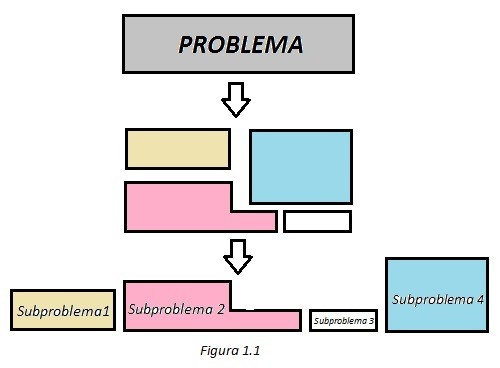

Con el término software se especifica al conjunto de programas informáticos que se desarrollan en el entorno de una computadora y que normalmente se clasifican en tres tipos:
Según Brian Blum, la ingenieria del software es la aplicacion de herramientas, métodos y disciplinas para la produccion y mantenimiento de soluciones automaticas a problemas del mundo real. Como ingenieros del oftware usamos nuestro conocimiento de las computadoras y de la computacion para ayudar a resolver problemas. La mayoria de las veces el problema bajo analisis está relacionado con una computadora o con un sistema de computacion existente;l pero aveces las dificultades que se quieren resolver nada tienen que ver con las computadoras. Por eso, es esencial que en primera instancia se conosca y se entienda la naturaleza del problema a resolver, despues, si resulta necesario, se puede usar la tecnologia como herramienta para implementar nuestra solucion.
La mayor parte de los problemas son de gran magnitud y en la mayoria de las veces de hacerle frente, en especial si es algo nuevo que nunca ha sido resuelto. Entonces, se debe comenzar por investigar la raiz del problema efectuando su analiss correspondiente ¿Cómo se hace? sencillamente, desglosando el problema en piezas que se puedan comprender y que se puedan abordar. De esta forma se puede describir un problema grande como una serie de problemas mas pequeños y que mantengan relacion entre si. La figura 1.1 explica como opera el analisis de desglosamiento.
